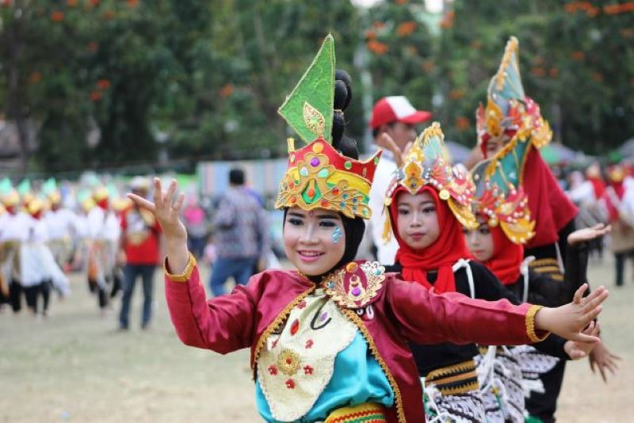
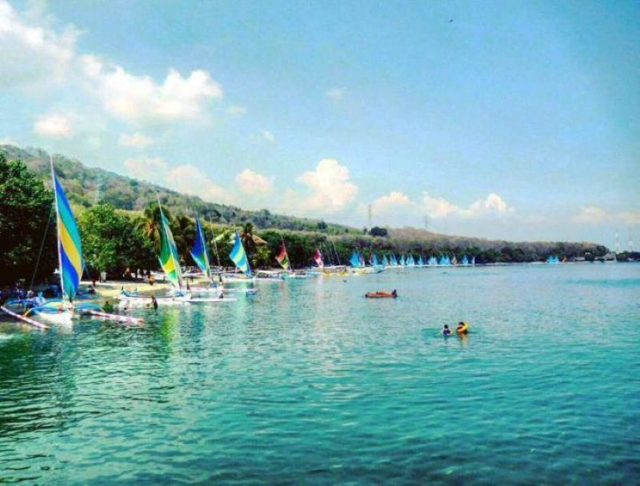

Sejarah Singkat
Berdasarkan Legenda Pangeran Situbondo, nama Kabupaten Situbondo berasal dari
nama Pangeran Situbondo atau Pangeran Aryo Gajah Situbondo, dimana sepengetahuan
masyarakat Situbondo bahwa Pangeran Situbondo tidak pernah menampakkan diri,
hal tersebut dikarenakan keberadaannya di Kabupaten Situbondo kemungkinan sudah
dalam keadaan meninggal dunia akibat kekalahan pertarungannya dengan Joko Jumput,
sehingga hanya ditandai dengan ditemukannya sebuah 'odheng' (ikat kepala)
Pangeran Situbondo yang ditemukan di wilayah Kelurahan Patokan dan sekarang
dijadikan Ibukota Kabupaten Situbondo.
Sedangkan menurut pemeo yang berkembang di masyarakat, arti kata SITUBONDO berasal
dari kata : SITI = tanah dan BONDO ikat, hal tersebut dikaitkan dengan suatu keyakinan
bahwa orang pendatang akan diikat untuk menetap di tanah Situbondo, Kenyataan mendekati
kebenaran karna banyak orang pendatang yang akhirnya menetap di Kabupaten Situbondo.
Budaya dan Tradisi

Budaya dan tradisi masyarakat Situbondo mencerminkan kekayaan warisan leluhur yang
beragam dan khas. Salah satu tradisi yang terkenal adalah Ojhung, sebuah pertarungan
ritual yang dilakukan oleh dua orang laki-laki menggunakan rotan sebagai senjata dan
dilaksanakan dalam rangkaian upacara adat untuk memohon hujan. Selain itu, masyarakat
Situbondo juga merayakan Petik Laut, sebuah upacara tradisional yang dilakukan oleh
para nelayan untuk bersyukur atas hasil laut yang melimpah serta memohon keselamatan
saat melaut. Tradisi lainnya, seperti Komantan Korong, memperlihatkan kerukunan dan
kebersamaan warga melalui kegiatan gotong royong membersihkan desa menjelang musim panen.
Pada waktu-waktu tertentu, masyarakat juga melaksanakan Tradisi Hodo, yaitu prosesi
pemakaman yang menggabungkan unsur-unsur adat dan agama, menampilkan betapa eratnya
hubungan antara budaya dan spiritualitas.
Situbondo Ethnic Festival adalah acara tahunan
yang menampilkan berbagai seni dan budaya daerah, memperkenalkan kekayaan budaya Situbondo
kepada publik yang lebih luas. Tradisi-tradisi ini tidak hanya sebagai warisan leluhur,
tetapi juga sebagai wujud solidaritas dan identitas kolektif masyarakat Situbondo yang
tetap hidup di tengah modernisasi.
Keindahan Alam
Kota Situbondo, yang terletak di pesisir utara Jawa Timur, menawarkan keindahan
alam yang memukau dengan beragam destinasi yang menawan.
Pantai Pasir Putih

Pantai Pasir Putih adalah salah satu daya tarik utama dengan pasir putih yang lembut
dan air laut yang jernih, menjadikannya tempat ideal untuk bersantai dan menikmati
keindahan matahari terbenam.
Baluran Africa Van Java
Tak jauh dari sana, Pantai Bama di kawasan Taman Nasional Baluran menawarkan panorama
alami yang menakjubkan dengan hutan mangrove dan kehidupan laut yang beragam. Selain pantai,
perbukitan hijau dan lanskap Savana Bekol memberikan nuansa eksotis yang mempesona,
mengundang pengunjung untuk menjelajahi keanekaragaman hayati dan menikmati
pemandangan yang menakjubkan.
Pegunungan Argopuro
Situbondo juga dikenal dengan keindahan Gunung Argopuro yang menawarkan
trekking menantang serta air terjun yang tersembunyi di dalam hutan tropis
yang rimbun. Keindahan alam Situbondo, dengan kombinasi pesona pantai dan
pegunungan, membuatnya menjadi destinasi wisata yang menggugah rasa kagum
dan memberikan pengalaman alam yang berkesan.